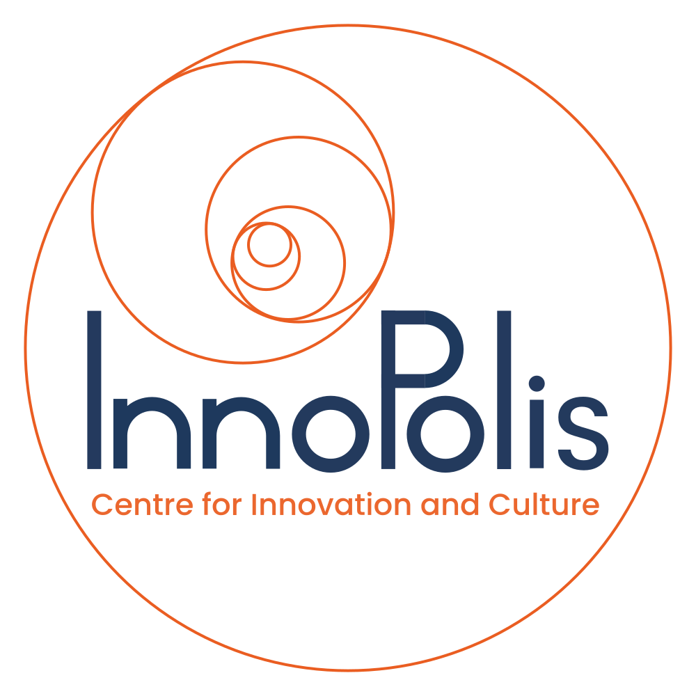

Главная
Студенты
О курсе
Контакты
Войти
Войти на сайт
Войти
Как нас найти 🌏
Санкт‑Петербург
Санкт‑Петербург и Ленинградская область — Яндекс Карты
Наши контакты
Адрес: г. Санкт-Петербург, Дворцовая пл., 2, 1900000
Тел: +7 (812) 555-555-55